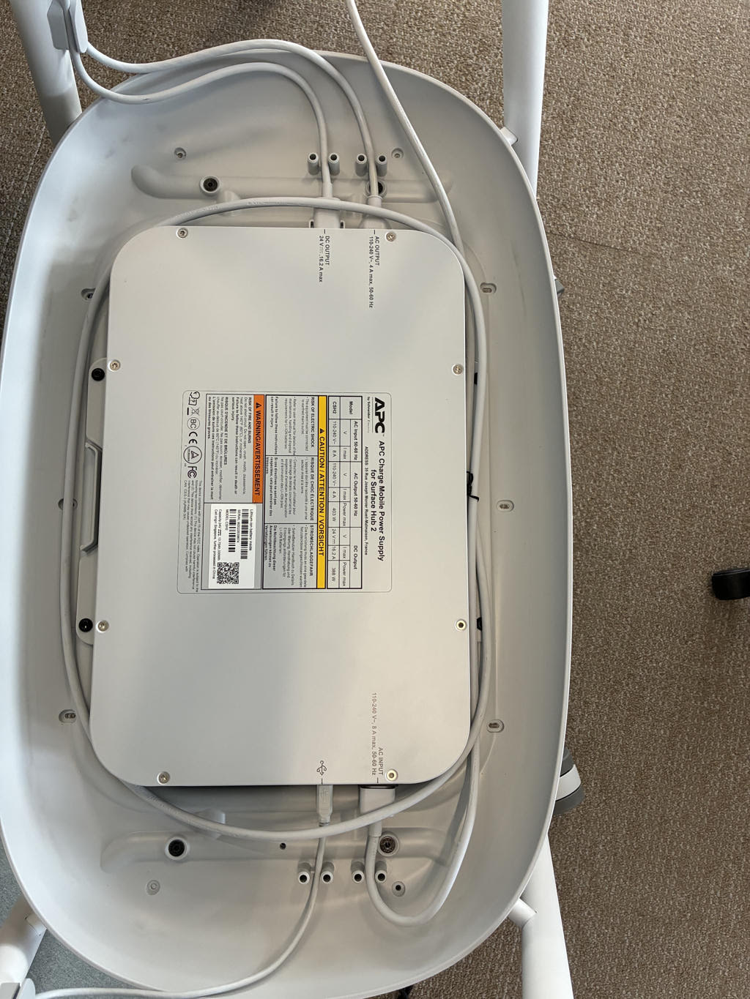
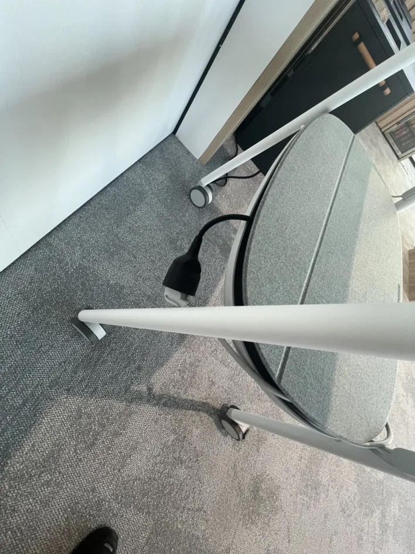
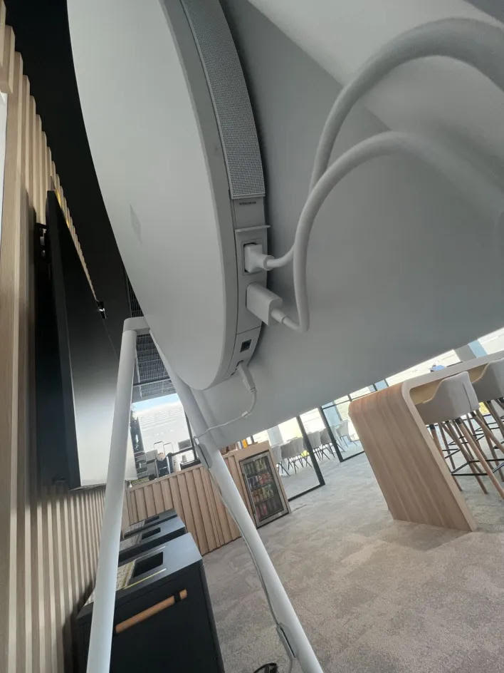
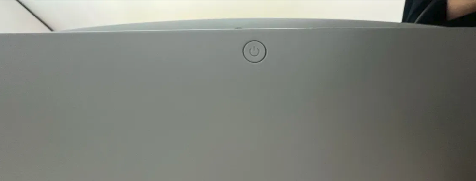
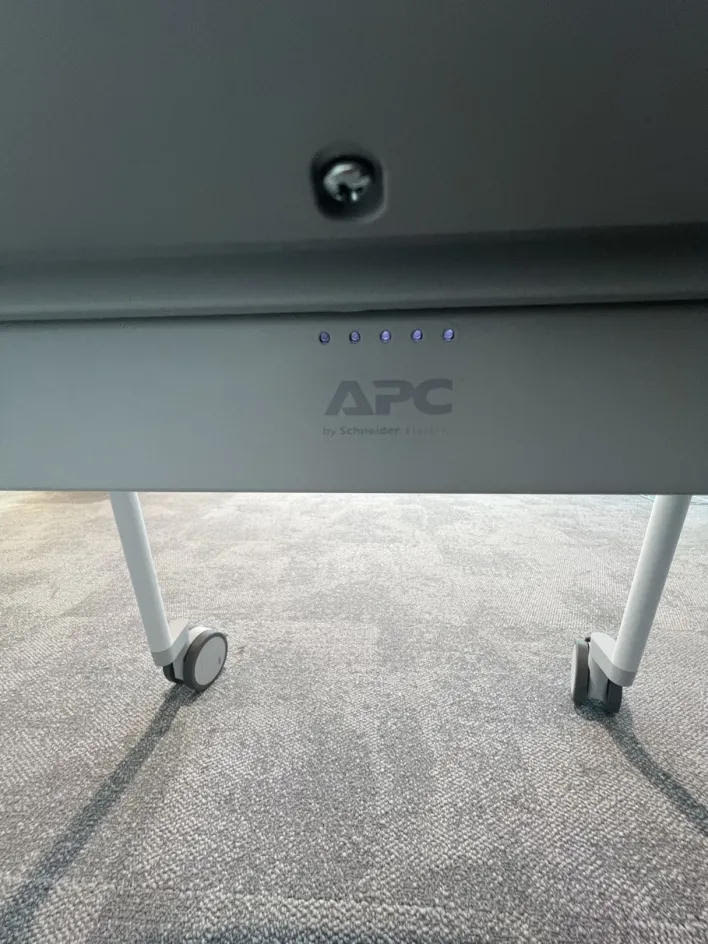

Mission 1
Présentation et intervention sur la Surface Hub
1. Présentation générale
La Surface Hub est un dispositif collaboratif interactif conçu pour les environnements professionnels. Elle permet l’organisation de réunions Microsoft Teams, le partage de contenu, la collaboration en temps réel ainsi que l’utilisation d’applications professionnelles sur un grand écran tactile interactif.
Le modèle utilisé au sein de l’entreprise est installé sur un support mobile équipé d’une batterie APC intégrée. Cette batterie joue le rôle d’onduleur, aussi appelé UPS, et permet :
d’assurer la continuité de fonctionnement en cas de coupure électrique ;
de déplacer la Surface Hub d’une salle à une autre sans interruption ;
de sécuriser les réunions et les sessions en cours.
La batterie APC doit rester alimentée et activée en permanence afin de garantir le bon fonctionnement de l’équipement.
2. Contexte de l’intervention
Dans le cadre de mon alternance chez VusionGroup, j’ai été sollicité afin d’intervenir sur une Surface Hub rencontrant un dysfonctionnement.
Le problème constaté concernait l’alimentation et le fonctionnement général de l’équipement. La Surface Hub ne réagissait plus correctement et la batterie APC ne semblait plus assurer son rôle de relais électrique.
L’objectif de l’intervention était donc :
d’identifier l’origine du problème ;
de vérifier l’état de fonctionnement de la batterie APC ;
de contrôler les branchements électriques ;
de remettre la Surface Hub en état de fonctionnement ;
de garantir la disponibilité de l’équipement pour les réunions et les démonstrations professionnelles.
Cette intervention m’a permis de réaliser un diagnostic matériel et électrique complet sur un équipement collaboratif utilisé quotidiennement dans un environnement professionnel.
3. Fonctionnement électrique et câblage de la Surface Hub
3.1. Fonctionnement du module APC et rôle des câbles
Dans le compartiment inférieur du support mobile se trouve le module APC. Celui-ci possède deux connexions électriques principales :
un câble INPUT ;
un câble OUTPUT.
L’ensemble de l’alimentation électrique de la Surface Hub passe obligatoirement par cette batterie APC.
Câble INPUT : alimentation secteur
Le câble INPUT correspond au câble branché directement sur la prise murale.
Son rôle est :
d’alimenter la batterie APC ;
de recharger la batterie ;
d’alimenter indirectement la Surface Hub lorsque le secteur est disponible.
Sans ce câble, la batterie ne peut plus se recharger ni maintenir l’alimentation du dispositif.
Câble OUTPUT : alimentation de la Surface Hub
Le câble OUTPUT relie directement la batterie APC à la Surface Hub.
Son rôle est :
d’alimenter la Surface Hub lorsque le secteur fonctionne ;
de transmettre automatiquement l’alimentation de secours de la batterie APC en cas de coupure électrique.
La Surface Hub n’est donc jamais branchée directement sur une prise murale. Toute son alimentation passe obligatoirement par la batterie APC.
Résumé du flux d’alimentation
Prise murale → Câble INPUT → Batterie APC → Câble OUTPUT → Surface Hub
Ainsi :
le câble INPUT apporte l’alimentation secteur ;
le câble OUTPUT transmet l’alimentation à la Surface Hub ;
la batterie APC assure la continuité électrique.
3.2. Vérifications réalisées lors de l’intervention
Afin d’identifier l’origine du dysfonctionnement, plusieurs contrôles ont été effectués :
vérification de l’état de la batterie APC ;
contrôle des voyants lumineux ;
vérification du branchement du câble INPUT ;
contrôle du câble OUTPUT reliant la batterie à la Surface Hub ;
vérification de l’alimentation secteur ;
test du fonctionnement général de l’équipement.
Après analyse, le problème provenait du système d’alimentation de la batterie APC, empêchant la Surface Hub de fonctionner correctement.
Une fois les vérifications réalisées et les branchements contrôlés, l’équipement a pu être remis en fonctionnement.



3.3. Batterie APC : fonctionnement et indicateurs
La batterie APC se situe dans la partie inférieure du support mobile.
Un bouton d’alimentation permet :
d’allumer la batterie ;
de l’éteindre si nécessaire.
La batterie doit impérativement rester activée afin de garantir la continuité électrique de la Surface Hub.
Indicateurs de charge
La batterie dispose de cinq voyants lumineux indiquant son niveau de charge :
5 voyants allumés : batterie entièrement chargée ;
moins de 5 voyants : batterie partiellement chargée ;
aucun voyant : batterie éteinte ou déchargée.
Procédure de vérification en cas de dysfonctionnement
En cas de problème électrique ou si la batterie ne prend plus le relais :
1. vérifier que la batterie APC est allumée ;
2. vérifier la présence des voyants lumineux ;
3. contrôler le branchement du câble INPUT ;
4. vérifier la connexion du câble OUTPUT ;
5. contrôler la présence d’alimentation secteur.


3.4. Fonctionnement en cas de coupure de courant
En cas de coupure électrique, la batterie APC permet :
le maintien de l’affichage ;
la continuité des réunions ;
le déplacement de la Surface Hub sans arrêt brutal.
Ce système garantit la stabilité et la disponibilité de l’équipement dans un environnement professionnel.
3.5. Autonomie
Lorsque la batterie APC est entièrement chargée, l’autonomie moyenne constatée est d’environ deux heures dans le cadre d’une utilisation classique en réunion.
4. Préparation de la Surface Hub pour une démonstration CEC
4.1. Objectif de la procédure
Cette procédure a pour objectif de préparer correctement la Surface Hub afin de lancer une démonstration CEC, puis de remettre l’équipement dans son état de fonctionnement normal une fois la démonstration terminée.
Le respect des différentes étapes est essentiel afin d’éviter tout dysfonctionnement du mode réunion Teams.
5. Préparation de la Surface Hub
Étape 1 – Connexion du clavier
Avant toute manipulation, un clavier doit être connecté à la Surface Hub.
Une fois le clavier branché, appuyer cinq fois sur la touche Windows. Cette manipulation permet d’accéder à l’écran de sélection des sessions.
Étape 2 – Sélection du compte Administrator
Depuis l’écran de connexion, sélectionner le compte Administrator.
Ce compte permet d’accéder à l’environnement Windows nécessaire à la démonstration.
Étape 3 – Authentification
Après sélection du compte Administrator, saisir le mot de passe communiqué par les personnes responsables de l’équipement.
Étape 4 – Accès à l’environnement Windows
Une fois connecté, la Surface Hub fonctionne comme un poste Windows classique. L’environnement de démonstration peut alors être préparé.
6. Activation du VPN WireGuard
Étape 1 – Ouverture de WireGuard
Depuis le bureau Windows, ouvrir l’application WireGuard à l’aide du raccourci présent sur le bureau.
Étape 2 – Activation du VPN
Cliquer sur : Activer.
Étape 3 – Vérification de la connexion
Lorsque le statut affiché est : Activée, cela signifie que la connexion VPN est correctement établie et que la Surface Hub est connectée à l’environnement de démonstration.
7. Lancement de la démonstration CEC
Étape 1 – Ouverture de la démo
Depuis le bureau, ouvrir le raccourci Microsoft Edge nommé CEC Demo.
Étape 2 – Connexion à l’application
Une page de connexion apparaît. Renseigner les identifiants nécessaires puis se connecter. Dans certains cas, les identifiants peuvent déjà être enregistrés automatiquement.
Étape 3 – Vérification de la démo
Après connexion, vérifier que l’interface de démonstration s’affiche correctement.
8. Passage en mode plein écran
Afin d’obtenir un affichage optimal :
1. cliquer sur les trois points du navigateur ;
2. sélectionner l’option plein écran.
La démonstration doit alors apparaître sans bordures visibles.
9. Fin de démonstration – Retour au mode Teams
Attention : étape obligatoire
À la fin de la démonstration, la Surface Hub doit impérativement être remise dans son état de fonctionnement normal.
Sans cette procédure, l’équipement peut devenir indisponible pour les réunions Teams.
Étape 1 – Fermer la démonstration
Fermer ou réduire la fenêtre de démonstration afin de revenir sur le bureau Windows.
Étape 2 – Désactivation du VPN
Ouvrir WireGuard puis cliquer sur : Désactiver. Vérifier que le statut n’est plus affiché comme « Activée ».
Étape 3 – Retour à la session Skype / Teams
Effectuer ensuite les actions suivantes :
cliquer sur l’icône Windows ;
sélectionner le compte Administrator ;
choisir la session Skype / Teams.
La Surface Hub revient alors dans son mode de fonctionnement normal.
10. Point de vigilance
La procédure de fermeture est aussi importante que la préparation de la démonstration.
Il est impératif :
de désactiver le VPN WireGuard ;
de quitter la session Administrator ;
de revenir sur la session Skype / Teams.
Sans ces actions, la Surface Hub risque de ne plus fonctionner correctement pour les prochaines réunions professionnelles.